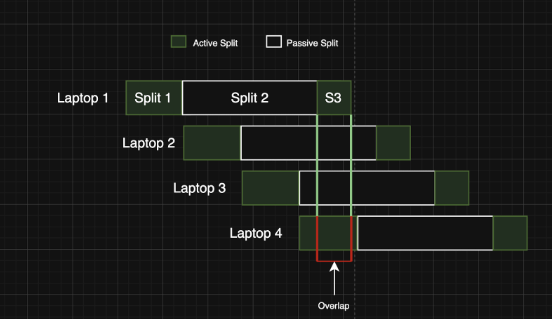
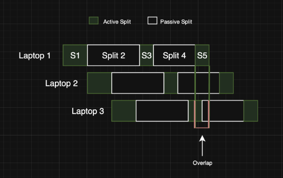
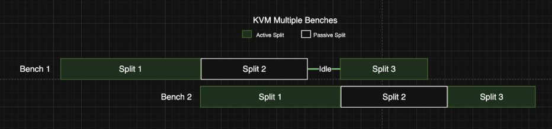

Writeup
I created this analysis after a workflow change moved laptop provisioning away from a KVM-based parallel process and into a more sequential model. Under the new rule, laptops could not sit idle between active steps. In practice, this meant technicians had to immediately progress each device through setup and closeout rather than stage multiple laptops and manage them in parallel.
To understand the impact, I broke the workflow into three stages: setup and install preparation, passive installation, and final checks and closeout. I then collected real timing data across multiple cycles to estimate average stage times and calculate the maximum achievable output under the new constraint.
The analysis showed that the bottleneck was the workflow itself, not technician effort. Because setup and closeout had to happen immediately, the process limited how much passive install time could be overlapped. Under that model, maximum output was about 5 laptops per hour.


I then compared that against the original KVM-based workflow, where a technician could stage and control up to 8 laptops at once and use existing KVM stations to overlap setup, installation, and closeout across multiple devices. Using the same process stages, that model supported roughly 15 laptops per hour without requiring new equipment.

I shared the findings with my supervisor, their leadership chain, and Meta stakeholders, including supply chain analysts. The analysis helped show that the drop in output was caused by system design rather than technician performance, and the workflow eventually returned to the KVM-based model.
This project reflects the kind of engineering work I enjoy most: analyzing real-world systems, identifying bottlenecks, and using data to improve throughput and resource utilization.